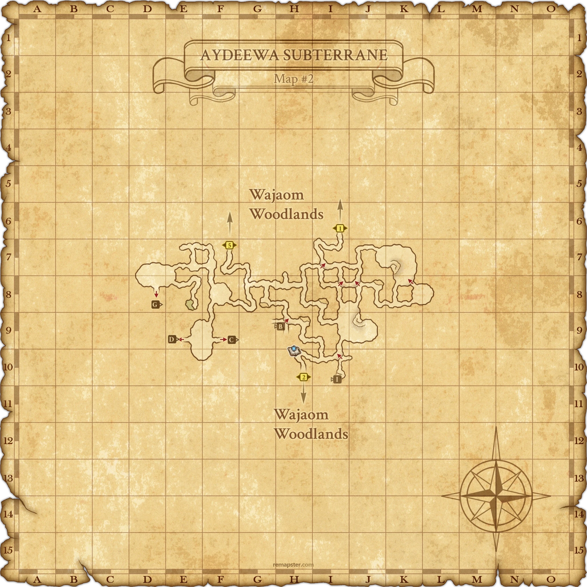

Level 75 reference · Zenith rules
|
Job: Monk |
|
| Zone | Level | Drops | Steal | Spawns | Notes |
|---|---|---|---|---|---|
| Aydeewa Subterrane | 82 | 1 | A, T(S), T(H) ~15,000 HP | ||
|
HP = Detects Low HP; M = Detects Magic; Sc = Follows by Scent; T(S) = True-sight; T(H) = True-hearing JA = Detects job abilities; WS = Detects weaponskills; Z(D) = Asleep in Daytime; Z(N) = Asleep at Nighttime | |||||
Notes


Image source
 Image source
Image source
- Spawned by trading Spoilt Blood to the ??? at (E-8) on Map #2.
- Enter Aydeewa Subterrane from Wajaom Woodlands (G-7) and circle around to the west. The ??? is at the bottom of the ramp with the small pond in it at (E-8).
- You can also enter by using a Survival Guide (Mamool Ja Savage → Aydeewa Subterrane), which takes you to (H-10) on Map #2. This can be useful if you fight Chigre multiple times.
- Its melee attacks have an additional effect of one of: Blind, Poison, Paralyze, Slow, Petrification, Silence, Drain, Curse, and Plague.
- The additional effect begins with either poison, slow, blind, or paralyze before moving on to other effects. Poison doesn't always occur first.
- Blink can absorb some of the additional effects.
- It always prioritizes the additional effect the player is currently not inflicted with. That is to say, if additional effect: Poison inflicts a player with Poison and Poisona or Antidote is used, then the additional effect will continue to be Poison until the player is unable to remove it before the next additional effect occurs.
- The additional effect activates at a very high percentage.
- Petrification can last over 2 minutes.
- Once it has inflicted all enfeebles, it gains an additional effect simliar to Drain Samba for almost 80 additional damage per hit.
- Chigre has a very fast attack rate, similar to Hundred Fists. Can wipe three shadows, and get additional hits per attack round. High accuracy and seemed to have pretty high evasion.
- Immune to Bind and Gravity. Susceptible to Stun, Slow, Paralyze, Blind, and Poison.
- Recommended using max defense tank, such as RDM/BLU, or PLD/RDM, as its hits are overall weak.
- Hits rarely do over 80 damage on someone with under 300 defense.
- Rages after 60mins; Normally hits a RDM/NIN for 40-80 damage, during rage it hits for 140+ damage.
- PLD with around 750 DEF and Phalanx causes the NM to hit for 0.
- Has 11-12% enhanced movement speed. Cannot maintain distance in a straight line without movement speed gear.
- Two Fossorial Fleas spawn around the ???. (16-minute respawn time)
- Hate is less random than it seems. Chigre has rapid enmity decay. Setup involving many different jobs had the monk taking most of the hits, suggesting that because of a monk's low, but near constant, enmity gain; it was best at maintaining hate. When a mage cast a nuke or a melee weaponskilled, Chigre changed targets to them for a short period of time, but soon it went back to the monk. A few -na spells can take hate off a paladin that used Invincible 5 seconds prior.
- Hate completely resets each time someone is put on or moved on the hate list; in other words, the last person to perform an action on Chigre or someone with hate on Chigre will take full hate.
- Seems to build resistance to Elemental Magic after 10~ nukes.
- It is possible for both rings to drop at the same time.
- Perfect Defense makes Chigre hit for 0 damage and prevents all statuses for the duration of the fight.
- (see testimonials)
Adapted from Eden Wiki: Chigre · Contributors and history · CC BY-SA 4.0. Revision 42341. Layout, links and optional background text adapted for Zenith.